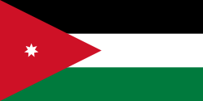
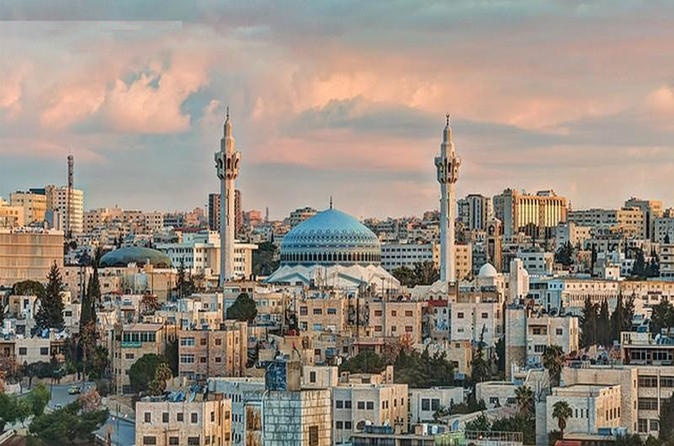
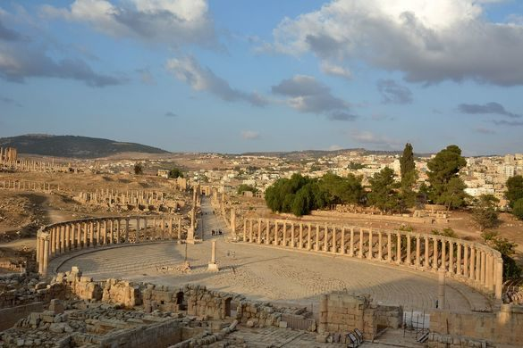
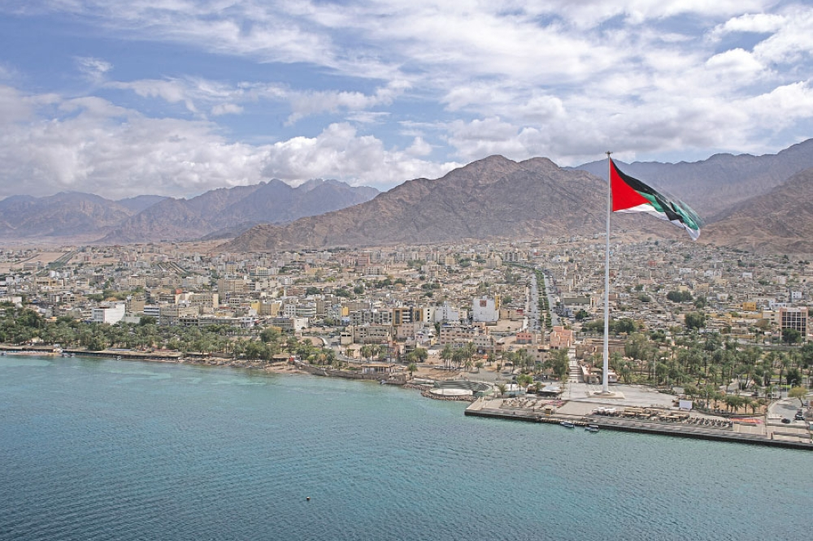

Иордания
Иордания – арабское государство на восточном берегу реки Иордан
известное своими древними памятниками
природными заповедниками и морскими курортами
Здесь находится знаменитая археологическая достопримечательность – город Петра
история которого восходит к 300-м годам до н. э. Когда-то он был столицей древнего Набатейского царства
Город расположен в узкой долине, и надгробия
храмы и памятники высечены в окружающих скалах из розового песчаника
Поэтому Петру ещё называют Розовым городом

Амман
jordan
Амман – столица Иордании
современный город с многочисленными древними руинами
На вершине Крепостной горы на территории древней Цитадели сохранились
колонны римского храма Геркулеса и комплекс Омейядского дворца VIII века с грандиозным куполом
На склоне в римском каменном театре II века
который вмещает до 6000 человек
иногда проходят концерты и другие мероприятия

Джараш
jordan
Джа́раш, также Дже́раш (араб. مدينة جرش)
город на севере Иордании
Расположен примерно в 48 км к северу от Аммана
на высоте 527 м над уровнем моря
Население по данным переписи 2004 года составляет 31 650 человек
почвы в течение сотен лет, пока не были обнаружены немецким востоковедом Ульрихом Зетценом в 1806 году
История
В античности Гераса была развитым и оживлённым торговым городом, частью так называемого Декаполиса
. Здесь родился знаменитый философ Никомах Герасский
. Сильное землетрясение в 749 г. н. э. уничтожило большую часть Джераша
Руины Джераша оставались покрытыми слоем почвы в течение сотен лет
пока не были обнаружены немецким востоковедом Ульрихом Зетценом в 1806 год

Мёртвое море
jordan
Мертвое море – соленое озеро между Израилем
Иорданией и Западным берегом реки Иордан
Берега озера находятся более чем на 400 м ниже уровня моря
что делает это место самым низким участком суши на планете
Вода Мертвого моря содержит огромное количество солей, поэтому в нем очень легко плавать
Богатая минералами черная грязь озера используется в лечебных и косметических процедурах
которые можно пройти на местных курортах
Мертвое море окружают пустыни с многочисленными оазисами и историческими достопримечательностями
Средняя глубина: 200 м
Высота поверхности над уровнем моря: -430 м
Площадь: 605 км²
Длина: 50 км
Площадь водосбора: 41 650 км²

Акаба
jordan
Акаба – это портовый город в Иордании на побережье Акабского залива в Красном море
Его первые поселения относятся к 4000 году до н. э. Основные достопримечательности города – Мамлюкский форт и Археологический музей
Акаба также известна своими пляжными курортами
где собирается множество любителей водных видов спорта
Благодаря большому выбору полигонов для дайверов, таких как коралловый риф Рас-Аль-Ямани в Морском парке на юге города
это направление также пользуется популярностью среди аквалангистов
Площадь водосбора: 41 650 км²
